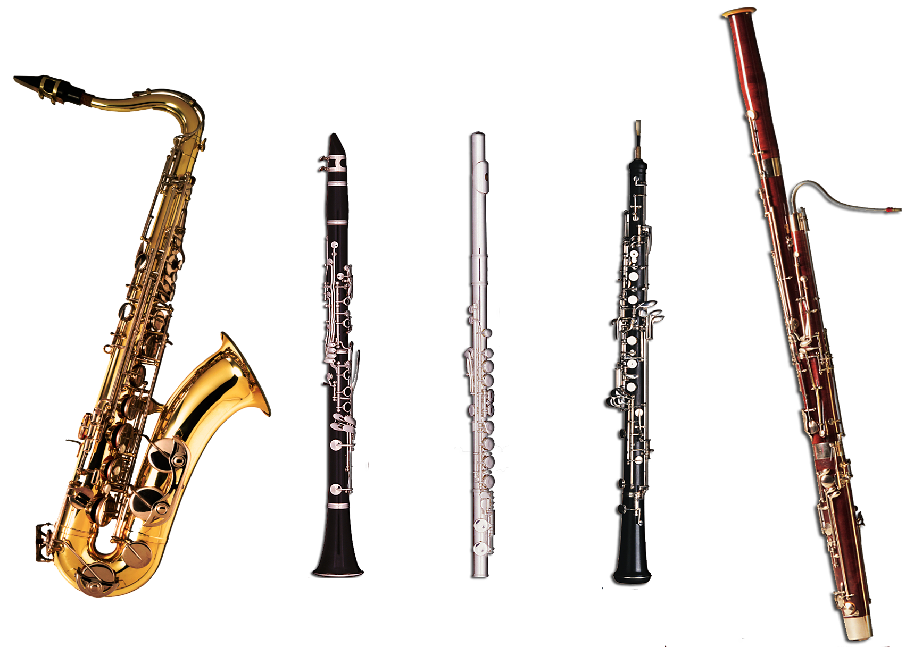

Welcome to Free Wind Instrument Sheet Music!
List of Sheet Music
- I like simple clear sites.
- This should contain a list of sheet music.
- I used a 10 column grid for this project.
- Most professional websites use 12 to 16.
- 10 should be fine on a modular website though.
- I also added a light background which doesn't hinder the content.
- This makes the site a little interesting
- I will improve this site later on for bunus marks :)